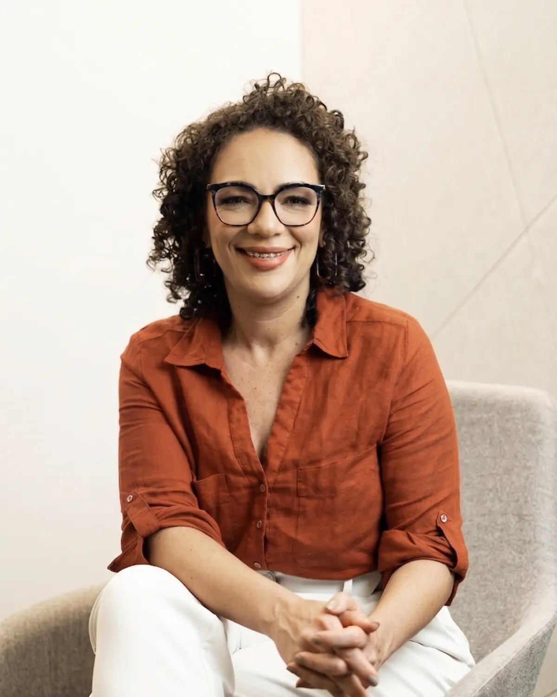

回复时间
2 个工作日内
高清照片和录音录像可应要求提供。
职业医学医生，《Quando o Trabalho Dói》（当工作伤人）作者，巴西职业道德伤害研究者。
Ana Paula Teixeira 医生是一名职业医学医生，拥有近三十年临床和企业实践经验，服务过矿业、钢铁、实验室、医院、传媒和零售企业。著有《Quando o Trabalho Dói》（当工作伤人，AssedioNet 出版社，2025），入围第七届 Ecos da Literatura 文学奖。她是国际职业卫生委员会（ICOH）、ABERGO 和 ANAMT/AMB 会员，并于 2024 年获 Board Academy 认证为董事会成员。
Ana Paula Teixeira 医生是一名职业医学医生，拥有近三十年临床和企业实践经验，服务过矿业、钢铁、实验室、医院、传媒和零售企业。她是巴西职业道德伤害研究者，在 Escola Bahiana 的硕士研究中主持 OMIS-R 量表的巴西葡萄牙语翻译与效度验证，这是巴西最早的同类研究之一。著有《Quando o Trabalho Dói: do adoecimento silencioso à cultura de bem-estar》（当工作伤人：从无声的疾病到幸福文化，AssedioNet 出版社，2025，253 页），入围第七届 Ecos da Literatura 文学奖。她是国际职业卫生委员会（ICOH）、ABERGO 和 ANAMT/AMB 会员，并于 2024 年获 Board Academy 认证为董事会成员。她为企业、行业活动和专业协会带来对当今管理层面临议题的临床解读：NR-1（巴西职业风险管理标准）与心理社会因素、职场霸凌、心理健康相关疾病、复工和心理安全。曾服务 PetroRecôncavo、Alvopetro、ABRH-BA 和 ABRH Sergipe 等机构。
Ana Paula Teixeira 医生，职业医学医生。
执业注册：CRM-BA 12797 · RQE 7237（职业医学）。
如果只能写一项资质，最能支撑她观点的是职业医学医生、《Quando o Trabalho Dói》作者。
她的注册属于医学委员会（CRM），不是心理学委员会（CRP）。她是医生，不是心理学家。
Escutaris 是她作为创始合伙人的职业心理健康公司。在新闻报道中，署名使用她本人的名字。
职业道德伤害研究正在她于 Escola Bahiana 的硕士阶段进行，结果尚未发表。